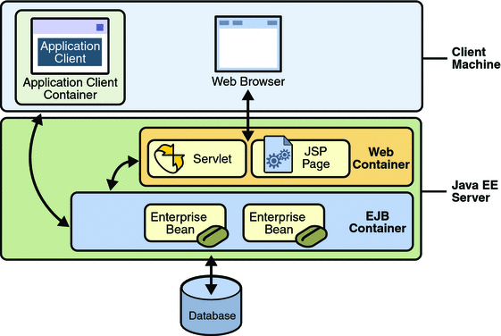
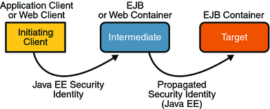

Securing Enterprise Beans
Enterprise beans are the Java EE components that implement Enterprise JavaBeans (EJB) technology. Enterprise beans run in the EJB container, a runtime environment within the Application Server, as shown in Figure 29-1.
Figure 29-1 Java EE Server and Containers
Although transparent to the application developer, the EJB container provides system-level services such as transactions and security to its enterprise beans. These services enable you to quickly build and deploy enterprise beans, which form the core of transactional Java EE applications.
The following sections describe declarative and programmatic security mechanisms that can be used to protect enterprise bean resources. The protected resources include methods of enterprise beans that are called from application clients, web components, or other enterprise beans. This section assumes that you have read Chapter 20, Enterprise Beans and Chapter 21, Getting Started with Enterprise Beans before starting this section.
You can protect enterprise beans by doing the following:
Declaring Security Role Names Referenced from Enterprise Bean Code
Using Enterprise Bean Security Deployment Descriptor Elements
Two example applications demonstrate adding security to enterprise beans. These example applications are discussed in the following sections:
You should also read JSR-220: Enterprise JavaBeans 3.0 for more information on this topic. This document can be downloaded from http://jcp.org/en/jsr/detail?id=220. Chapter 16 of this specification, Security Management, discusses security management for enterprise beans.
Accessing an Enterprise Bean Caller’s Security Context
In general, security management should be enforced by the container in a manner that is transparent to the enterprise beans’ business methods. The security API described in this section should be used only in the less frequent situations in which the enterprise bean business methods need to access the security context information.
The javax.ejb.EJBContext interface provides two methods that allow the bean provider to access security information about the enterprise bean’s caller.
java.security.Principal getCallerPrincipal();
The purpose of the getCallerPrincipal method is to allow the enterprise bean methods to obtain the current caller principal’s name. The methods might, for example, use the name as a key to information in a database.
boolean isCallerInRole(String roleName);
The purpose of the isCallerInRole(String roleName) method is to test whether the current caller has been assigned to a given security role. Security roles are defined by the bean provider or the application assembler, and are assigned to principals or principals groups that exist in the operational environment by the deployer.
The following code sample illustrates the use of the getCallerPrincipal() method:
@Stateless public class EmployeeServiceBean
implements EmployeeService{
@Resource SessionContext ctx;
@PersistenceContext EntityManager em;
public void changePhoneNumber(...) {
...
// obtain the caller principal.
callerPrincipal = ctx.getCallerPrincipal();
// obtain the caller principal’s name.
callerKey = callerPrincipal.getName();
// use callerKey as primary key to find EmployeeRecord
EmployeeRecord myEmployeeRecord =
em.findByPrimaryKey(EmployeeRecord.class, callerKey);
// update phone number
myEmployeeRecord.setPhoneNumber(...);
...
}
}In the previous example, the enterprise bean obtains the principal name of the current caller and uses it as the primary key to locate an EmployeeRecord entity. This example assumes that application has been deployed such that the current caller principal contains the primary key used for the identification of employees (for example, employee number).
The following code sample illustrates the use of the isCallerInRole(String roleName) method:
@DeclareRoles("payroll")
@Stateless public class PayrollBean implements Payroll {
@Resource SessionContext ctx;
public void updateEmployeeInfo(EmplInfo info) {
oldInfo = ... read from database;
// The salary field can be changed only by callers
// who have the security role "payroll"
if (info.salary != oldInfo.salary &&
!ctx.isCallerInRole("payroll")) {
throw new SecurityException(...);
}
...
}
...
}An example application that uses the getCallerPrincipal and isCallerInRole methods is described in Example: Using the isCallerInRole and getCallerPrincipal Methods.
Declaring Security Role Names Referenced from Enterprise Bean Code
You can declare security role names used in enterprise bean code using either the @DeclareRoles annotation (preferred) or the security-role-ref elements of the deployment descriptor. Declaring security role names in this way enables you to link these security role names used in the code to the security roles defined for an assembled application. In the absence of this linking step, any security role name used in the code will be assumed to correspond to a security role of the same name in the assembled application.
A security role reference, including the name defined by the reference, is scoped to the component whose bean class contains the @DeclareRoles annotation or whose deployment descriptor element contains the security-role-ref deployment descriptor element.
You can also use the security-role-ref elements for those references that were declared in annotations and you want to have linked to a security-role whose name differs from the reference value. If a security role reference is not linked to a security role in this way, the container must map the reference name to the security role of the same name. See Linking Security Role References to Security Roles for a description of how security role references are linked to security roles.
For an example using each of these methods, read the following sections:
Declaring Security Roles Using Annotations
The @DeclareRoles annotation is specified on a bean class, where it serves to declare roles that can be tested by calling isCallerInRole from within the methods of the annotated class.
You declare the security roles referenced in the code using the @DeclareRoles annotation. When declaring the name of a role used as a parameter to the isCallerInRole(String roleName) method, the declared name must be the same as the parameter value. You can optionally provide a description of the named security roles in the description element of the @DeclareRoles annotation.
The following code snippet demonstrates the use of the @DeclareRoles annotation. In this example, the @DeclareRoles annotation indicates that the enterprise bean AardvarkPayroll makes the security check using isCallerInRole("payroll") to verify that the caller is authorized to change salary data. The security role reference is scoped to the session or entity bean whose declaration contains the @DeclareRoles annotation.
@DeclareRoles("payroll")
@Stateless public class PayrollBean implements Payroll {
@Resource SessionContext ctx;
public void updateEmployeeInfo(EmplInfo info) {
oldInfo = ... read from database;
// The salary field can be changed only by callers
// who have the security role "payroll"
if (info.salary != oldInfo.salary &&
!ctx.isCallerInRole("payroll")) {
throw new SecurityException(...);
}
...
}
...
}The syntax for declaring more than one role is as shown in the following example:
@DeclareRoles({"Administrator", "Manager", "Employee"})
Declaring Security Roles Using Deployment Descriptor Elements
Note - Any values explicitly specified in the deployment descriptor override any values specified in annotations. If a value for a method has not been specified in the deployment descriptor, and a value has been specified for that method by means of the use of annotations, the value specified in annotations will apply. The granularity of overriding is on the per-method basis.
If the @DeclareRoles annotation is not used, you can use the security-role-ref elements of the deployment descriptor to declare the security roles referenced in the code, as follows:
Declare the name of the security role using the role-name element in the deployment descriptor. The name must be the security role name that is used as a parameter to the isCallerInRole(String roleName) method.
Optionally provide a description of the security role in the description element.
The following example illustrates how an enterprise bean’s references to security roles are declared in the deployment descriptor. In this example, the deployment descriptor indicates that the enterprise bean AardvarkPayroll makes the security check using isCallerInRole("payroll") in its business method. The security role reference is scoped to the session or entity bean whose declaration contains the security-role-ref element.
...
<enterprise-beans>
...
<session>
<ejb-name>AardvarkPayroll</ejb-name>
<ejb-class>com.aardvark.payroll.PayrollBean</ejb-class>
...
<security-role-ref>
<description>
This security role should be assigned to the
employees of the payroll department who are
allowed to update employees’ salaries.
</description>
<role-name>payroll</role-name>
</security-role-ref>
...
</session>
...
</enterprise-beans>
...
Defining a Security View of Enterprise Beans
You can define a security view of the enterprise beans contained in the ejb-jar file and pass this information along to the deployer. When a security view is passed on to the deployer, the deployer uses this information to define method permissions for security roles. If you don’t define a security view, the deployer will have to determine what each business method does to determine which users are authorized to call each method.
A security view consists of a set of security roles, a semantic grouping of permissions that a given type of users of an application must have to successfully access the application. Security roles are meant to be logical roles, representing a type of user. You can define method permissions for each security role. A method permission is a permission to invoke a specified group of methods of the enterprise beans’ business interface, home interface, component interface, and/or web service endpoints. You can specify an authentication mechanism that will be used to verify the identity of a user.
It is important to keep in mind that security roles are used to define the logical security view of an application. They should not be confused with the user groups, users, principals, and other concepts that exist in the Application Server.
The following sections discuss setting up security roles, authentication mechanisms, and method permissions that define a security view:
Defining Security Roles
Use the @DeclareRoles and @RolesAllowed annotations to define security roles using Java language annotations. The set of security roles used by the application is the total of the security roles defined by the security role names used in the @DeclareRoles and @RolesAllowed annotations.
You can augment the set of security roles defined for the application by annotations using the security-role deployment descriptor element to define security roles, where you use the role-name element to define the name of the security role.
The following example illustrates how to define security roles in a deployment descriptor:
...
<assembly-descriptor>
<security-role>
<description>
This role includes the employees of the
enterprise who are allowed to access the
employee self-service application. This role
is allowed only to access his/her own
information.
</description>
<role-name>employee</role-name>
</security-role>
<security-role>
<description>
This role includes the employees of the human
resources department. The role is allowed to
view and update all employee records.
</description>
<role-name>hr-department</role-name>
</security-role>
<security-role>
<description>
This role includes the employees of the payroll
department. The role is allowed to view and
update the payroll entry for any employee.
</description>
<role-name>payroll-department</role-name>
</security-role>
<security-role>
<description>
This role should be assigned to the personnel
authorized to perform administrative functions
for the employee self-service application.
This role does not have direct access to
sensitive employee and payroll information.
</description>
<role-name>admin</role-name>
</security-role>
...
</assembly-descriptor>
Linking Security Role References to Security Roles
The security role references used in the components of the application are linked to the security roles defined for the application. In the absence of any explicit linking, a security role reference will be linked to a security role having the same name.
You can explicitly link all the security role references declared in the @DeclareRoles annotation or security-role-ref elements for a component to the security roles defined by the use of annotations (as discussed in Defining Security Roles) and/or in the security-role elements.
You use the role-link element to link each security role reference to a security role. The value of the role-link element must be the name of one of the security roles defined in a security-role element, or by the @DeclareRoles or @RolesAllowed annotations (as discussed in Defining Security Roles). You do not need to use the role-link element to link security role references to security roles when the role-name used in the code is the same as the name of the security-role to which you would be linking.
The following example illustrates how to link the security role reference name payroll to the security role named payroll-department:
...
<enterprise-beans>
...
<session>
<ejb-name>AardvarkPayroll</ejb-name>
<ejb-class>com.aardvark.payroll.PayrollBean</ejb-class>
...
<security-role-ref>
<description>
This role should be assigned to the
employees of the payroll department.
Members of this role have access to
anyone’s payroll record.
The role has been linked to the
payroll-department role.
</description>
<role-name>payroll</role-name>
<role-link>payroll-department</role-link>
</security-role-ref>
...
</session>
...
</enterprise-beans>
...
Specifying an Authentication Mechanism
Authentications mechanisms are specified in the runtime deployment descriptor. When annotations, such as the @RolesAllowed annotation, are used to protect methods in the enterprise bean, you can configure the Interoperable Object Reference (IOR) to enable authentication for an enterprise application. This is accomplished by adding the <login-config>element to the runtime deployment descriptor, sun-ejb-jar.xml.
You can use the USERNAME-PASSWORD authentication method for an enterprise bean. You can use either the BASIC or CLIENT-CERT authentication methods for web service endpoints.
For more information on specifying an authentication mechanism, read Configuring IOR Security or Example: Securing an Enterprise Bean.
Specifying Method Permissions
If you have defined security roles for the enterprise beans in the ejb-jar file, you can also specify the methods of the business interface, home interface, component interface, and/or web service endpoints that each security role is allowed to invoke.
You can use annotations and/or the deployment descriptor for this purpose. Refer to the following sections for more information on specifying method permissions:
Specifying Method Permissions Using Annotations
The method permissions for the methods of a bean class can be specified on the class, the business methods of the class, or both. Method permissions can be specified on a method of the bean class to override the method permissions value specified on the entire bean class. The following annotations are used to specify method permissions:
@RolesAllowed("list-of-roles")
The value of the @RolesAllowed annotation is a list of security role names to be mapped to the security roles that are permitted to execute the specified method or methods. Specifying this annotation on the bean class means that it applies to all applicable business methods of the class.
The @PermitAll annotation specifies that all security roles are permitted to execute the specified method or methods. Specifying this annotation on the bean class means that it applies to all applicable business methods of the class.
The @DenyAll annotation specifies that no security roles are permitted to execute the specified method or methods.
The following example code illustrates the use of these annotations:
@RolesAllowed("admin")
public class SomeClass {
public void aMethod () {...}
public void bMethod () {...}
...
}
@Stateless public class MyBean implements A extends SomeClass {
@RolesAllowed("HR")
public void aMethod () {...}
public void cMethod () {...}
...
}In this example, assuming aMethod, bMethod, and cMethod are methods of business interface A, the method permissions values of methods aMethod and bMethod are @RolesAllowed("HR") and @RolesAllowed("admin") respectively. The method permissions for method cMethod have not been specified.
To clarify, the annotations are not inherited by the subclass per se, they apply to methods of the superclass which are inherited by the subclass. Also, annotations do not apply to CMP entity beans.
An example that uses annotations to specify method permissions is described in Example: Securing an Enterprise Bean.
Specifying Method Permissions Using Deployment Descriptors
Note - Any values explicitly specified in the deployment descriptor override any values specified in annotations. If a value for a method has not been specified in the deployment descriptor, and a value has been specified for that method by means of the use of annotations, the value specified in annotations will apply. The granularity of overriding is on the per-method basis.
You define the method permissions in the deployment descriptor using the method-permission elements, as discussed below:
Each method-permission element includes a list of one or more security roles and a list of one or more methods. All the listed security roles are allowed to invoke all the listed methods. Each security role in the list is identified by the role-name element. Each method (or set of methods) is identified by the method element.
The method permissions relation is defined as the union of all the method permissions defined in the individual method-permission elements.
A security role or a method can appear in multiple method-permission elements.
Here is some other useful information about setting method permissions using deployment descriptors:
You can specify that all roles are permitted to execute one or more specified methods, which, in effect, indicates that the methods should not be checked for authorization prior to invocation by the container. To specify that all roles are permitted, use the unchecked element instead of a role name in a method permission.
If a method permission specifies both the unchecked element for a given method and one or more security roles, all roles are permitted for the specified methods.
The exclude-list element can be used to indicate the set of methods that should not be called. At deployment time, the deployer will know that no access is permitted to any method contained in this list.
If a given method is specified in both the exclude-list element and in a method permission, the deployer should exclude access to this method.
It is possible that some methods are not assigned to any security roles nor contained in the exclude-list element. In this case, the deployer should assign method permissions for all of the unspecified methods, either by assigning them to security roles, or by marking them as unchecked. If the deployer does not assign method permissions to the unspecified methods, those methods must be treated by the container as unchecked.
The method element uses the ejb-name, method-name, and method-params elements to denote one or more methods of an enterprise bean’s business interface, home interface, component interface, and/or web service endpoints.
There are three legal styles for composing the method element:
The first style is used for referring to all of the business interface, home interface, component interface, and web service endpoints methods of a specified bean.
<method> <ejb-name>EJB_NAME</ejb-name> <method-name>*</method-name> </method>
The second style is used for referring to a specified method of the business interface, home interface, component interface, or web service endpoints methods of the specified enterprise bean. If the enterprise bean contains multiple methods with the same overloaded name, the element of this style refers to all of the methods with the overloaded name.
<method> <ejb-name>EJB_NAME</ejb-name> <method-name>METHOD</method-name> </method>
The third style is used for referring to a specified method within a set of methods with an overloaded name. The method must be defined in the business interface, home interface, component interface, or web service endpoints methods of the specified enterprise bean. If there are multiple methods with the same overloaded name, however, this style refers to all of the overloaded methods. All of the parameters are the fully-qualified Java types, for example, java.lang.String.
<method> <ejb-name>EJB_NAME</ejb-name> <method-name>METHOD</method-name> <method-params> <method-param>PARAMETER_1</method-param> <method-param>PARAMETER_2</method-param> </method-params> </method>
The following example illustrates how security roles are assigned method permissions in the deployment descriptor:
...
<method-permission>
<role-name>employee</role-name>
<method>
<ejb-name>EmployeeService</ejb-name>
<method-name>*</method-name>
</method>
</method-permission>
<method-permission>
<role-name>employee</role-name>
<method>
<ejb-name>AardvarkPayroll</ejb-name>
<method-name>findByPrimaryKey</method-name>
</method>
<method>
<ejb-name>AardvarkPayroll</ejb-name>
<method-name>getEmployeeInfo</method-name>
</method>
<method>
<ejb-name>AardvarkPayroll</ejb-name>
<method-name>updateEmployeeInfo</method-name>
</method>
</method-permission>
<method-permission>
<role-name>payroll-department</role-name>
<method>
<ejb-name>AardvarkPayroll</ejb-name>
<method-name>findByPrimaryKey</method-name>
</method>
<method>
<ejb-name>AardvarkPayroll</ejb-name>
<method-name>getEmployeeInfo</method-name>
</method>
<method>
<ejb-name>AardvarkPayroll</ejb-name>
<method-name>updateEmployeeInfo</method-name>
</method>
<method>
<ejb-name>AardvarkPayroll</ejb-name>
<method-name>updateSalary</method-name>
</method>
</method-permission>
<method-permission>
<role-name>admin</role-name>
<method>
<ejb-name>EmployeeServiceAdmin</ejb-name>
<method-name>*</method-name>
</method>
</method-permission>
...
Mapping Security Roles to Application Server Groups
The Application Server assigns users to principals or groups, rather than to security roles. When you are developing a Java EE application, you don’t need to know what categories of users have been defined for the realm in which the application will be run. In the Java EE platform, the security architecture provides a mechanism for mapping the roles defined in the application to the users or groups defined in the runtime realm.
To map a role name permitted by the application or module to principals (users) and groups defined on the server, use the security-role-mapping element in the runtime deployment descriptor (sun-application.xml, sun-web.xml, or sun-ejb-jar.xml) file. The entry needs to declare a mapping between a security role used in the application and one or more groups or principals defined for the applicable realm of the Application Server. An example for the sun-application.xml file is shown below:
<sun-application>
<security-role-mapping>
<role-name>CEO</role-name>
<principal-name>jschwartz</principal-name>
</security-role-mapping>
<security-role-mapping>
<role-name>ADMIN</role-name>
<group-name>directors</group-name>
</security-role-mapping>
</sun-application>The role name can be mapped to either a specific principal (user), a group, or both. The principal or group names referenced must be valid principals or groups in the current default realm of the Application Server. The role-name in this example must exactly match the role-name in the security-role element of the corresponding web.xml file or the role name defined in the @DeclareRoles or @RolesAllowed annotations.
Sometimes the role names used in the application are the same as the group names defined on the Application Server. Under these circumstances, you can enable a default principal-to-role mapping on the Application Server using the Admin Console. To enable the default principal-to-role-mapping, follow these steps:
Start the Application Server, then the Admin Console.
Expand the Configuration node.
Select the Security node.
On the Security page, check the Enabled box beside Default Principal to Role Mapping.
For an enterprise application, you can specify the security role mapping at the application layer, in sun-application.xml, or at the module layer, in sun-ejb-jar.xml. When specified at the application layer, the role mapping applies to all contained modules and overrides same-named role mappings at the module layer. The assembler is responsible for reconciling the module-specific role mappings to yield one effective mapping for the application.
Both example applications demonstrate security role mapping. For more information, see Example: Securing an Enterprise Bean and Example: Using the isCallerInRole and getCallerPrincipal Methods.
Propagating Security Identity
You can specify whether a caller’s security identity should be used for the execution of specified methods of an enterprise bean, or whether a specific run-as identity should be used.
Figure 29-2 illustrates this concept.
Figure 29-2 Security Identity Propagation
In this illustration, an application client is making a call to an enterprise bean method in one EJB container. This enterprise bean method, in turn, makes a call to an enterprise bean method in another container. The security identity during the first call is the identity of the caller. The security identity during the second call can be any of the following options:
By default, the identity of the caller of the intermediate component is propagated to the target enterprise bean. This technique is used when the target container trusts the intermediate container.
A specific identity is propagated to the target enterprise bean. This technique is used when the target container expects access using a specific identity.
To propagate an identity to the target enterprise bean, configure a run-as identity for the bean as discussed in Configuring a Component's Propagated Security Identity.
Establishing a run-as identity for an enterprise bean does not affect the identities of its callers, which are the identities tested for permission to access the methods of the enterprise bean. The run-as identity establishes the identity that the enterprise bean will use when it makes calls.
The run-as identity applies to the enterprise bean as a whole, including all the methods of the enterprise bean’s business interface, home interface, component interface, and web service endpoint interfaces, the message listener methods of a message-driven bean, the time-out callback method of an enterprise bean, and all internal methods of the bean that might be called in turn.
Configuring a Component’s Propagated Security Identity
You can configure an enterprise bean’s run-as, or propagated, security identity using either of the following:
The following example illustrates the definition of a run-as identity using annotations:
@RunAs("admin") @Stateless public class EmployeeServiceBean implements EmployeeService { ... }The role-name element of the run-as application deployment descriptor element (web.xml, ejb-jar.xml)
The following example illustrates the definition of a run-as identity using deployment descriptor elements:
... <enterprise-beans> ... <session> <ejb-name>EmployeeService</ejb-name> ... <security-identity> <run-as> <role-name>admin</role-name> </run-as> </security-identity> ... </session> ... </enterprise-beans> ...
Alternately, you can use the use-caller-identity element to indicate that you want to use the identity of the original caller, as shown in the code below:
<security-identity>
<use-caller-identity />
</security-identity>You must explicitly specify the run-as role name mapping to a given principal in sun-web.xml or sun-ejb-jar.xml if the given roles associate to more than one user principal.
More detail about the elements contained in deployment descriptors is available in the Sun Java System Application Server 9.1 Application Deployment Guide.
In either case, you will have to map the run-as role name to a given principal defined on the Application Server if the given roles associate to more than one user principal. Mapping roles to principals is described in Mapping Security Roles to Application Server Groups.
Trust between Containers
When an enterprise bean is designed so that either the original caller identity or a designated identity is used to call a target bean, the target bean will receive the propagated identity only; it will not receive any authentication data.
There is no way for the target container to authenticate the propagated security identity. However, because the security identity is used in authorization checks (for example, method permissions or with the isCallerInRole() method), it is vitally important that the security identity be authentic. Because there is no authentication data available to authenticate the propagated identity, the target must trust that the calling container has propagated an authenticated security identity.
By default, the Application Server is configured to trust identities that are propagated from different containers. Therefore, there are no special steps that you need to take to set up a trust relationship.
Using Enterprise Bean Security Annotations
Annotations are used in code to relay information to the deployer about security and other aspects of the application. Specifying this information in annotations or in the deployment descriptor helps the deployer set up the appropriate security policy for the enterprise bean application.
Any values explicitly specified in the deployment descriptor override any values specified in annotations. If a value for a method has not been specified in the deployment descriptor, and a value has been specified for that method by means of the use of annotations, the value specified in annotations will apply. The granularity of overriding is on the per-method basis.
The following is a listing of annotations that address security, can be used in an enterprise bean, and are discussed in this tutorial:
The @DeclareRoles annotation declares each security role referenced in the code. Use of this annotation is discussed in Declaring Security Roles Using Annotations.
The @RolesAllowed, @PermitAll, and @DenyAll annotations are used to specify method permissions. Use of these annotations is discussed in Specifying Method Permissions Using Annotations.
The @RunAs metadata annotation is used to configure a component’s propagated security identity. Use of this annotation is discussed in Configuring a Component's Propagated Security Identity.
Using Enterprise Bean Security Deployment Descriptor Elements
Enterprise JavaBeans components use an EJB deployment descriptor that must be named META-INF/ejb-jar.xml and must be contained in the EJB JAR file. The role of the deployment descriptor is to relay information to the deployer about security and other aspects of the application. Specifying this information in annotations or in the deployment descriptor helps the deployer set up the appropriate security policy for the enterprise bean application. More detail about the elements contained in deployment descriptors is available in the Sun Java System Application Server 9.1 Application Deployment Guide.
Note - Using annotations is the recommended method for adding security to enterprise bean applications.
Any values explicitly specified in the deployment descriptor override any values specified in annotations. If a value for a method has not been specified in the deployment descriptor, and a value has been specified for that method by means of the use of annotations, the value specified in annotations will apply. The granularity of overriding is on the per-method basis.
The following is a listing of deployment descriptor elements that address security, can be used in an enterprise bean, and are discussed in this tutorial:
The security-role-ref element declares each security role referenced in the code. Use of this element is discussed in Declaring Security Roles Using Deployment Descriptor Elements.
The security-role element defines broad categories of users, and is used to provide access to protected methods. Use of this element is discussed in Defining Security Roles.
The method-permission element is used to specify method permissions. Use of these elements is discussed in Specifying Method Permissions Using Deployment Descriptors.
The run-as element is used to configure a component’s propagated security identity. Use of this element is discussed in Configuring a Component's Propagated Security Identity.
The schema for ejb-jar deployment descriptors can be found in section 18.5, Deployment Descriptor XML Schema, in the EJB 3.0 Specification (JSR-220) at http://jcp.org/en/jsr/detail?id=220.
Configuring IOR Security
The EJB interoperability protocol is based on Internet Inter-ORB Protocol (IIOP/GIOP 1.2) and the Common Secure Interoperability version 2 (CSIv2) CORBA Secure Interoperability specification.
Enterprise beans that are deployed in one vendor’s server product are often accessed from Java EE client components that are deployed in another vendor’s product. CSIv2, a CORBA/IIOP-based standard interoperability protocol, addresses this situation by providing authentication, protection of integrity and confidentiality, and principal propagation for invocations on enterprise beans, where the invocations take place over an enterprise’s intranet. CSIv2 configuration settings are specified in the Interoperable Object Reference (IOR) of the target enterprise bean. IOR configurations are defined in Chapter 24 of the CORBA/IIOP specification, Secure Interoperability. This chapter can be downloaded from http://www.omg.org/cgi-bin/doc?formal/02-06-60.
The EJB interoperability protocol is defined in Chapter 14, Support for Distribution and Interoperability, of the EJB specification, which can be downloaded from http://jcp.org/en/jsr/detail?id=220.
Based on application requirements, IORs are configured in vendor-specific XML files, such as sun-ejb-jar.xml, instead of in standard application deployment descriptor files, such as ejb-jar.xml.
For a Java EE application, IOR configurations are specified in Sun-specific xml files, for example, sun-ejb-jar_2_1-1.dtd. The ior-security-config element describes the security configuration information for the IOR. A description of some of the major subelements is provided below.
transport-config
This is the root element for security between the endpoints. It contains the following elements:
integrity: This element specifies whether the target supports integrity-protected messages for transport. The values are NONE, SUPPORTED, or REQUIRED.
confidentiality: This element specifies whether the target supports privacy-protected messages (SSL) for transport. The values are NONE, SUPPORTED, or REQUIRED.
establish-trust-in-target: This element specifies whether or not the target component is capable of authenticating to a client for transport. It is used for mutual authentication (to validate the server’s identity). The values are NONE, SUPPORTED, or REQUIRED.
establish-trust-in-client: This element specifies whether or not the target component is capable of authenticating a client for transport (target asks the client to authenticate itself). The values are NONE, SUPPORTED, or REQUIRED.
as-context
This is the element that describes the authentication mechanism (CSIv2 authentication service) that will be used to authenticate the client. If specified, it will be the username-password mechanism.
In the Duke’s Bank example, the as-context setting is used to require client authentication (with user name and password) when access to protected methods in the AccountControllerBean and CustomerControllerBean components is attempted.
The as-context element contains the following elements:
required: This element specifies whether the authentication method specified is required to be used for client authentication. Setting this field to true indicates that the authentication method specified is required. Setting this field to false indicates that the method authentication is not required. The element value is either true or false.
auth-method: This element specifies the authentication method. The only supported value is USERNAME_PASSWORD.
realm: This element specifies the realm in which the user is authenticated. Must be a valid realm that is registered in a server configuration.
sas-context
This element is related to the CSIv2 security attribute service. It describes the sas-context fields.
In the Duke’s Bank example, the sas-context setting is set to Supported for the AccountBean, CustomerBean, and TxBean components, indicating that these target components will accept propagated caller identities.
The sas-context element contains the caller-propagation subelement. This element indicates if the target will accept propagated caller identities. The values are NONE or SUPPORTED.
The following is an example that defines security for an IOR:
<sun-ejb-jar>
<enterprise-beans>
<unique-id>1</unique-id>
<ejb>
<ejb-name>HelloWorld</ejb-name>
<jndi-name>HelloWorld</jndi-name>
<ior-security-config>
<transport-config>
<integrity>NONE</integrity>
<confidentiality>NONE</confidentiality>
<establish-trust-in-target>
NONE
</establish-trust-in-target>
<establish-trust-in-client>
NONE
</establish-trust-in-client>
</transport-config>
<as-context>
<auth-method>USERNAME_PASSWORD</auth-method>
<realm>default</realm>
<required>true</required>
</as-context>
<sas-context>
<caller-propagation>NONE</caller-propagation>
</sas-context>
</ior-security-config>
<webservice-endpoint>
<port-component-name>HelloIF</port-component-name>
<endpoint-address-uri>
service/HelloWorld
</endpoint-address-uri>
<login-config>
<auth-method>BASIC</auth-method>
</login-config>
</webservice-endpoint>
</ejb>
</enterprise-beans>
</sun-ejb-jar>
Deploying Secure Enterprise Beans
The deployer is responsible for ensuring that an assembled application is secure after it has been deployed in the target operational environment. If a security view (security annotations and/or a deployment descriptor) has been provided to the deployer, the security view is mapped to the mechanisms and policies used by the security domain in the target operational environment, which in this case is the Application Server. If no security view is provided, the deployer must set up the appropriate security policy for the enterprise bean application.
Deployment information is specific to a web or application server. Please read the Sun Java System Application Server 9.1 Application Deployment Guide for more information on deploying enterprise beans.
Accepting Unauthenticated Users
Web applications accept unauthenticated web clients and allow these clients to make calls to the EJB container. The EJB specification requires a security credential for accessing EJB methods. Typically, the credential will be that of a generic unauthenticated user. The way you specify this credential is implementation-specific.
In the Application Server, you must specify the name and password that an unauthenticated user will use to log in by modifying the Application Server using the Admin Console:
Start the Application Server, then the Admin Console.
Expand the Configuration node.
Select the Security node.
On the Security page, set the Default Principal and Default Principal Password values.
Accessing Unprotected Enterprise Beans
If the deployer has granted full access to a method, any user or group can invoke the method. Conversely, the deployer can deny access to a method.
To modify which role can be used in applications to grant authorization to anyone, specify a value for Anonymous Role. To set the Anonymous Role field, follow these steps:
Start the Application Server, then the Admin Console.
Expand the Configuration node.
Select the Security node.
On the Security page, specify the Anonymous Role value.